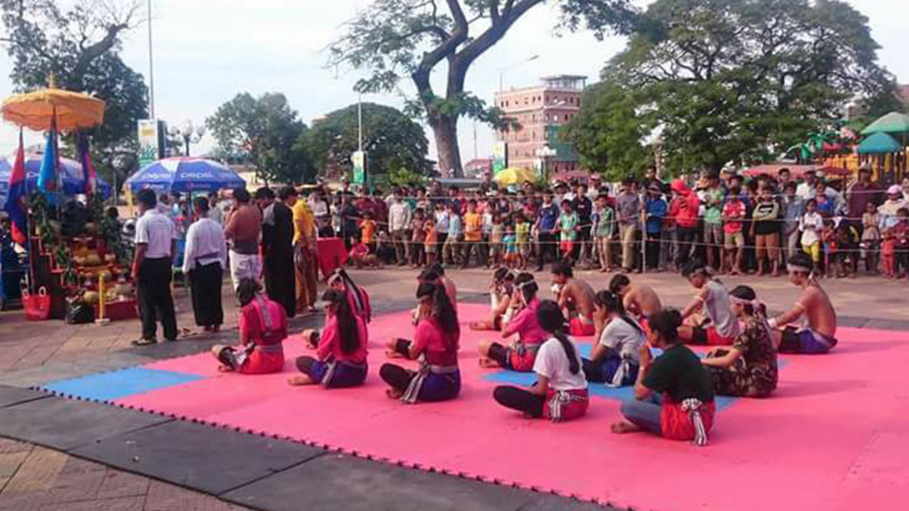
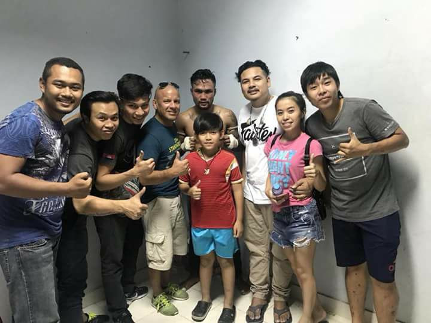

សាលា
គុនល្បុក្កតោលោកតាដំបងដែកខេត្តកំពង់ឆ្នាំង» បានដាក់គោលដៅដើម្បីផលិត ឬបណ្ដុះបណ្ដាលសិស្សគុនក្នុងន័យអភិរក្សក្បាច់គុនខ្មែរជាពិសេសល្បុក្កតោ និង មួយចំនួនទៀតដែលមានសមត្ថភាពនឹងត្រូវរុញច្រាញឲ្យពួកគេក្លាយជាកីឡាករអាជីពក្នុងការឈោងទៅប្រកួតកម្រិតថ្នាក់ជាតិ កម្រិតអាជីព និង ប្រកួតលើឆាកអន្តរជាតិនាពេលខាងមុខជាដើម។ នេះជាការប្រាប់ឲ្យដឹងពីលោកគ្រូ អំ យ៉ុម ដែលជាប្រធានក្លិបនៅខេត្តកំពង់ឆ្នាំង។
គ្រូបង្វឹកគុនល្បុក្កតោវ័យ៥៣ឆ្នាំគូសបញ្ជាក់ថា ៖«បច្ចុប្បន្នខ្ញុំមើលឃើញកូនសិស្ស ៥ នាក់ក្នុងចំណោមជាង ២០ នាក់ពេលហាត់រាល់ថ្ងៃដែលមានសមត្ថភាពល្អ។ ៥នាក់នោះមានសមត្ថភាពល្អ ព្រោះគេមកហ្វឹកហាត់ជាប្រចាំ មានការតាំងចិត្តខ្ពស់ ហើយ អ្នកផ្សេងទៀតហាត់ដែរ តែគេជាប់រវល់រៀន ឬ ជួយក្រុមគ្រួសារជាដើម។ ទាំង ៥ នាក់នោះមានប្រភេទគីឡូ ៤៥, ៤៨ និង ៥១ គីឡូក្រាម។ ខ្ញុំជឿជាក់ពួកគេអាចនឹងមានឈ្មោះទៅប្រកួតអាជីព ឬ ថ្នាក់ជាតិនាពេលខាងមុខមុនទៅប្រកួតលើឆាកអន្តរជាតិ»។ ដ្បិតនៅខេត្តឆ្ងាយពីរាជធានីភ្នំពេញ ប៉ុន្តែ លោក អំ យ៉ុម បានខិតខំប្រែងជាខ្លាំងដើម្បីគុនល្បុក្កតោខ្មែរ ពោលលោកបានជួយផ្សព្វផ្សាយទាំងក្នុងស្រុក និង ផ្សព្វផ្សាយដល់ជនបរទេសទៀតផង។ ទន្ទឹមនឹងសាលាគុនល្បុក្កតោនៅខេត្តកំពង់ឆ្នាំ លោកបានបង្កើត សាលាគុនមួយទៀតឈ្មោះថា «សាលាគុនល្បុក្កតោបារាយណ៍អណ្ដែតខេត្តព្រៃវែង» និង កំពុងរៀបចំបង្កើតនៅខេត្តកំពង់ចាំមួយទៀតក្នុងគោលបំណងថែរក្សាក្បាច់គុនកេរដូនតាមួយនេះ។
គ្រូគុនល្បុក្កតោសង្កត់ធ្ងន់បែបនេះ ៖«ខ្ញុំចង់ឃើញគ្រប់ខេត្តមានសាលាគុនល្បុក្កតោ ដូច្នេះខ្ញុំខិតខំធ្វើបណ្ដើរៗ។ យើងមិនមានអ្នកជួយឧបត្ថម្ភច្រើនទេ ព្រោះយើងមិនមានអ្វីផ្ដល់ផលចំណេញដល់គេ ឬ ជំនួញរបស់គេ។ ខ្ញុំយល់អំពីរឿងនេះ។ ប៉ុន្តែ ខាងខ្ញុំទទួលបានការចូលរួមពីសហគមន៍ និង យុវជនស្ម័គ្រចិត្តដែលខ្នះខ្នែងរៃអង្គាសថវិកាខ្លះដើម្បីធ្វើការងារមួយចំនួន និងការងាររដ្ឋបាលខ្លះៗ»។
ពេលសួរថា តើធ្វើយ៉ាងណាទើបអាចមានកីឡាករទៅប្រកួតលើសង្វៀននៅភ្នំពេញ ឬ សង្វៀន ONE Championship បើបង្ហាត់តែល្បុក្កតោ? លោកឆ្លើយថា ៖«តាមពិតក្បាច់គុនមិនខុសគ្នាប៉ុន្មានទេ។ ពេលទៅវ៉ៃ ឬ ប្រកួតទីណាយើងគោរពតាមគោលការណ៍ ឬ ច្បាប់របស់សង្វៀននោះ។ បើយើងទៅវ៉ៃ MMA នៅសង្វៀន ONE យើងក៏ត្រូវប្រកួតតាមក្បាច់របស់គេ វ៉ៃសេរី ឃ្លេ គាប និង កាច់តាមហ្នឹងទៅ។ យើងមានគ្រប់ក្បាច់ដែលត្រូវរៀន»។ «សាលាគុនល្បុក្កតោលោកតាដំបងដែកខេត្តកំពង់ឆ្នាំង» គឺជាសមាជិកមួយក្នុងចំណោមសមាជិកផ្លូវការទាំងឡាយនៃសហព័ន្ធកីឡាយុទ្ធគុនចម្រុះកម្ពុជា។ គ្រូបង្វឹក អំ យ៉ុម បានធ្វើការយ៉ាងជិតដិតជាមួយសហព័ន្ធនាពេលកន្លងមក ជាពិសេសការផ្លាស់ប្ដូរបទពិសោធន៍ការងារបង្វឹកជាច្រើនឆ្នាំជាមួយគ្រូបង្វឹកគុនចម្រុះ ហ៊ុន ច័ន្ទរាជ្យ។ តាមរយៈការចុះឈ្មោះជាផ្លូវការថ្មីៗនេះ សាលាគុននៅក្រុងកំពង់ឆ្នាំនឹងទទួលបានការជ្រោមជ្រែងទាំងបច្ចេកទេសហ្វឹកហាត់ និង ជំនួយជាសម្ភារហ្វឹកហាត់នាពេលខាងមុខ។
គួររំលឹកថា «សាលាគុនល្បុក្កតោលោកតាដំបងដែកខេត្តកំពង់ឆ្នាំង» ត្រូវបានបង្កើតឡើងជាផ្លូវអំឡុងឆ្នាំ ២០១៣ ប៉ុន្តែសាលាគុនមួយនេះបានបង្ហាត់សិស្សជាយូរយារណាស់មកហើយ។ កូនសិស្សលោកគ្រូ អំ យ៉ុម តែងតែចូលរួមកម្មវិធីសម្ដែងធំៗថ្នាក់ជាតិដើម្បីបង្ហាញអំពីក្បាច់គុនល្បុក្កតោ និង ចូលរួមក្នុងការប្រកួតថ្នាក់ជាតិ ឬ កីឡាជាតិជាហូរហែតាំងពីដើមរហូតដល់បច្ចុប្បន្ន។ សាលាគុនមួយនេះស្ថិតនៅភូមិប្អេរ សង្កាត់ប្អេរ ក្រុងកំពង់ឆ្នាំង ខេត្តកំពង់ឆ្នាំង៕